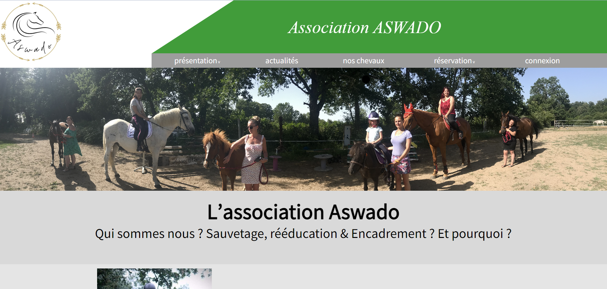

Projet Aswado
Contexte:
L’association Aswado a pour but la protection, la rééducation et la reconversion d’équidés.
Elle souhaite gagner en visibilité et pouvoir gérer les comptes d'abonnés numériquement.
Dans le cadre d'un stage de six semaines, il était demandé la réalisation d'un site comprenant:
-une partie accueil présentant le site
-une partie actualités
-une partie répertoriant les équidés de l'assossiation
-une partie pour la gestion des abonnés
-une partie pour afficher les tarifs de l'assossiation
-une interface de connexion
